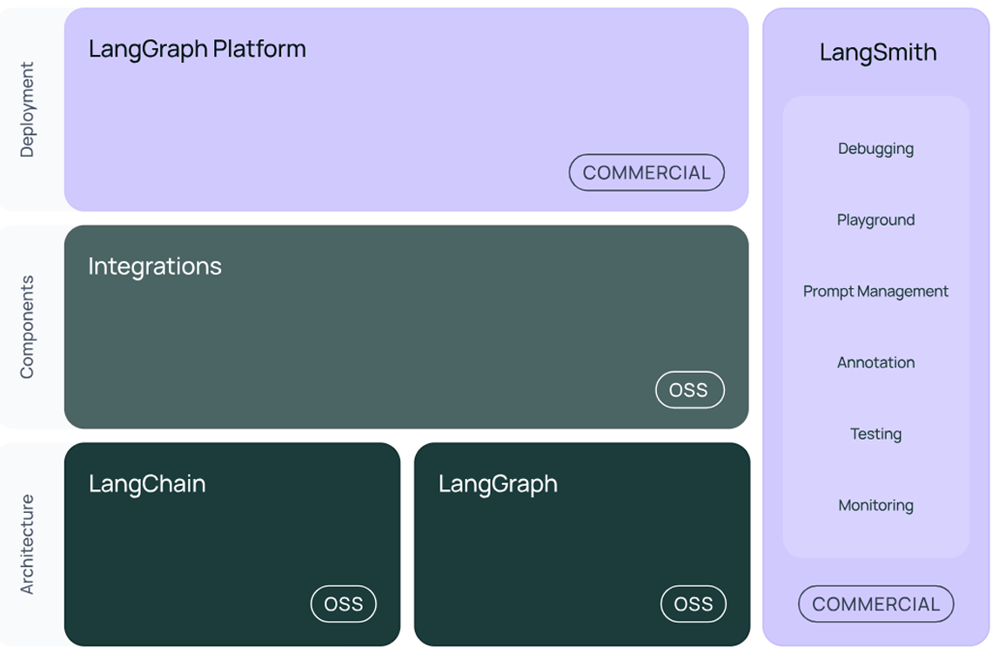
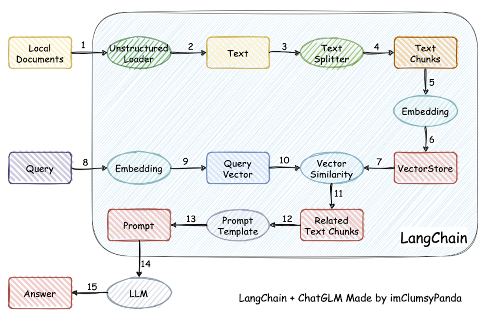
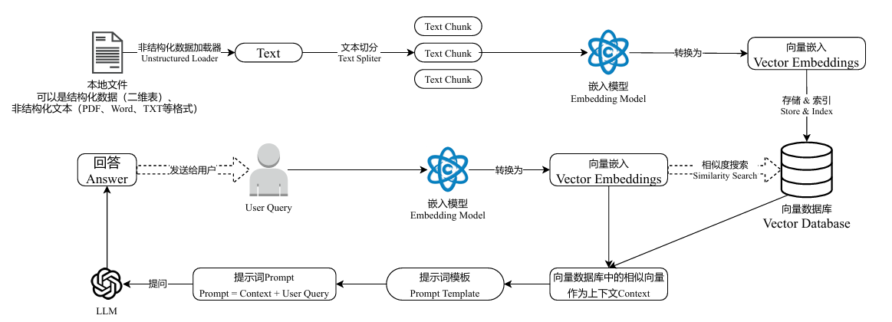
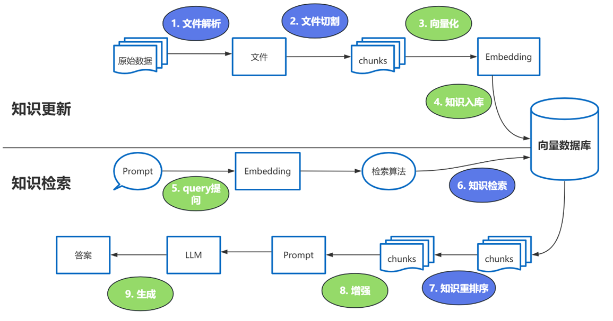
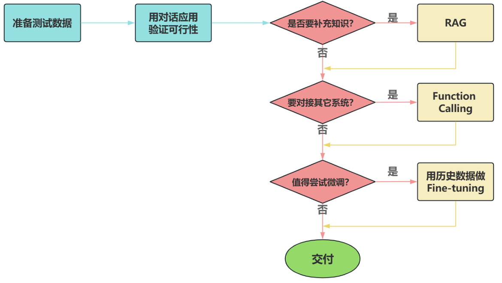
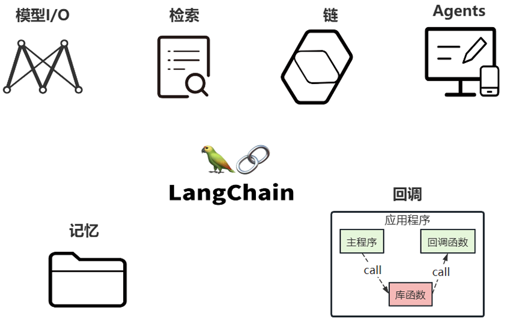
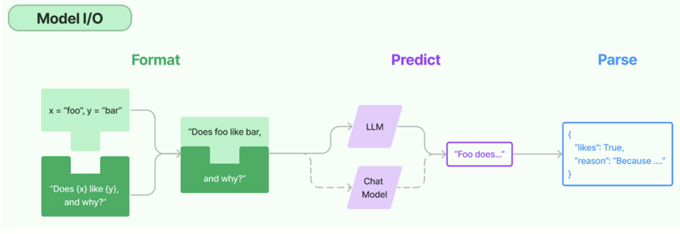
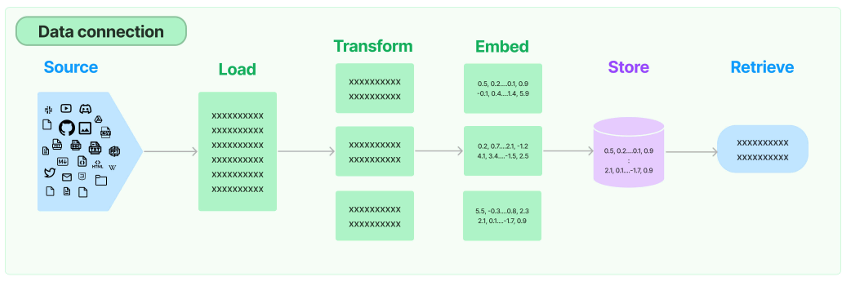
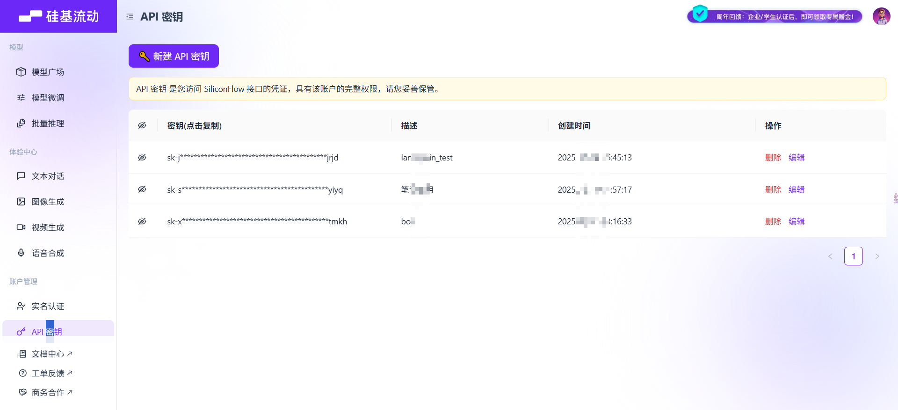

LangChain使用概述
LangChain使用概述
LangChain的使用场景
| 项目名称 | 技术点 | 难度 |
|---|---|---|
| 文档问答助手 | Prompt + Embedding + RetrievalQA | ⭐⭐ |
| 智能日程规划助手 | Agent + Tool + Memory | ⭐⭐⭐ |
| LLM+数据库问答 | SQLDatabaseToolkit + Agent | ⭐⭐⭐⭐ |
| 多模型路由对话系统 | RouterChain + 多 LLM | ⭐⭐⭐⭐ |
| 互联网智能客服 | ConversationChain + RAG +Agent | ⭐⭐⭐⭐⭐ |
| 企业知识库助手（RAG + 本地模 型） | VectorDB + LLM + Streamlit | ⭐⭐⭐⭐⭐ |
LangChain资料介绍
- 官网地址：https://www.langchain.com/langchain
- 官网文档：https://python.langchain.com/docs/introduction/
- API文档：https://python.langchain.com/api_reference/
- github地址：https://github.com/langchain-ai/langchain
架构设计
总体架构图
V0.2 / V0.3 版本  图中展示了LangChain生态系统的主要组件及其分类，分为三个层次： - 架构(Architecture) - 组件 (Components) - 部署(Deployment)。
内部架构详情
结构1：LangChain
langchain：构成应用程序认知架构的Chains，Agents，Retrieval strategies等 构成应⽤程序的链、智能体、RAG。
langchain-community：第三方集成 ⽐如：Model I/O、Retrieval、Tool & Toolkit；合作伙伴包 langchain-openai，langchain anthropic等。
langchain-Core：基础抽象和LangChain表达式语言 (LCEL)
小结：LangChain，就是AI应用组装套件，封装了一堆的API。langchain框架不大，但是里面琐碎的知 识点特别多。就像玩乐高，提供了很多标准化的乐高零件（比如，连接器、轮子等）
结构2：LangGraph LangGraph可以看做基于LangChain的api的进一步封装，能够协调多个Chain、Agent、Tools完成更 复杂的任务，实现更高级的功能。
结构3：LangSmith https://docs.smith.langchain.com/
链路追踪。提供了6大功能，涉及Debugging (调试)、Playground (沙盒)、Prompt Management (提 示管理)、Annotation (注释)、Testing (测试)、Monitoring (监控)等。与LangChain无缝集成，帮助你 从原型阶段过渡到生产阶段。
正是因为LangSmith这样的⼯具出现，才使得LangChain意义更⼤，要不仅靠⼀些API（当然也 可以不⽤，⽤原⽣的API），⽀持不住LangChain的热度。
结构4：LangServe 将LangChain的可运行项和链部署为REST API，使得它们可以通过网络进行调用。 Java怎么调用langchain呢？就通过这个langserve。将langchain应用包装成一个rest api，对外暴露服 务。同时，支持更高的并发，稳定性更好。
总结：LangChain当中，最有前途的两个模块就是：LangGraph，LangSmith。
LangChain能做RAG，其它的⼀些框架也能做，而且做的也不错，⽐如LlamaIndex。所以这时 候LangChain要在Agent这块发⼒，那就需要LangGraph。而LangSmith，做运维、监控。故， ⼆者是LangChain⾥最有前途的。
开发前的准备工作
前置知识
- Python 基础语法
- 变量、函数、类、装饰器、上下文管理器
- 模块导入、包管理（推荐用 pip 或 conda ）
- 大语言模型基础
- 了解什么是 LLM、Token、Prompt、Embedding
- OpenAI API 或其他模型提供商，如 Anthropic、阿里云百炼、DeepSeek等
- 通过浏览器或app使用过大模型（比如：豆包、DeepSeek等）
相关环境安装
安装Python或Anaconda
LangChain基于Python开发，因此需确保系统中安装了Python。 - 方式1：直接下载Python安装包。推荐版本为Python 3.10及以上 - 方式2：使用包管理工具（如Anaconda）进行安装。通过Anaconda可以轻松创建和管理虚拟环境，为 项目提供独立的依赖空间，避免不同项目之间的依赖冲突。
如何下载安装包
比如：安装langchain包
方式1：使用pip指令 基础指令
1 | # 安装包（默认最新版） |
高级操作 1
2
3
4
5
6# 国内镜像加速 （解决下载慢） -i：指定镜像源
pip install -i https://mirrors.aliyun.com/pypi/simple/ langchain
# 从本地/URL安装：
pip install ./local_package.whl
pip install https://github.com/user/repo/archive/main.zip
方式2：使用conda指令 1
2
3
4
5
6
7
8
9
10
11
12
13
14# 安装包（默认仓库）
conda install langchain
# 指定频道（如 conda-forge）
conda install -c conda-forge langchain==0.3.7
# 更新包
conda update langchain
# 卸载包
conda uninstall langchain
# 查看已安装包
conda list
-c ：是--channel 的缩写，conda⽤于指定包的安装来源渠道。 conda-forge ：该源⽐官⽅默认渠道更新更快、包更全
建议：二者最好不好混用，推荐先conda装基础包，后 pip补充的顺序。
1 | # 检查包来源 |
大模型应用开发
大模型应用技术特点：门槛低，天花板高。
基于RAG架构的开发
背景： - 大模型的知识冻结 - 大模型幻觉 而RAG就可以非常精准的解决这两个问题。
何为RAG？
Retrieval-Augmented Generation（检索增强生成）  检索-增强-⽣成过程：检索可以理解为第10步，增强理解为第12步（这⾥的提⽰词包含检索到的数 据），⽣成理解为第15步。
类似的细节图： 
强调一下难点的步骤：  这些过程中的难点： 1、文件解析 2、文件切割 3、知识检索 4、知识重排序
Reranker的使用场景： - 适合：追求 回答高精度和 高相关性的场景中特别适合使用 Reranker，例如专业知识库或者客服系 统等应用。 - 不适合：引入reranker会增加召回时间，增加检索延迟。服务对 响应时间要求高时，使用reranker 可能不合适。
这里有三个位置涉及到大模型的使用： - 第3步向量化时，需要使用EmbeddingModels。 - 第7步重排序时，需要使用RerankModels。 - 第9步生成答案时，需要使用LLM。
ChatGPT：⽀持约8k token的上下⽂ GPT4：⽀持约32k token的上下⽂
最新的很多⼤模型：都⽀持100万、1000万 token的上下⽂ （相当于2000万字⽂本或20小时 视频） ⼀般情况下模型中 token 和字数的换算⽐例⼤致如下： - 1 个英⽂字符 ≈ 0.3 个 token。 - 1 个中⽂字符 ≈ 0.6 个 token。
如何选择
面对一个需求，如何开始，如何选择技术方案？下面是个常用思路：  注意：其中最容易被忽略的，是准备测试数据
LangChain的核心组件
学习Langchain最简单直接的方法就是阅读官方文档。 https://python.langchain.com/v0.1/docs/modules/
一个问题引发的思考
如果要组织一个AI应用，开发者一般需要什么？ 1. 提示词模板的构建，不仅仅只包含用户输入。 2. 模型调用与返回，参数设置，返回内容的格式化输出。 3. 知识库查询，这里会包含文档加载，切割，以及转化为词嵌入（Embedding）向量。 4. 其他第三方工具调用，一般包含天气查询、Google搜索、一些自定义的接口能力调用。 5. 记忆获取，每一个对话都有上下文，在开启对话之前总得获取到之前的上下文吧？
核心组件的概述
LangChain的核心组件涉及六大模块，这六大模块提供了一个全面且强大的框架，使开发者能够创建复 杂、高效且用户友好的基于大模型的应用。

核心组件的说明
核心组件1：Model I/O
这个模块使⽤最多，也最简单 Model I/O：标准化各个大模型的输入和输出，包含输入模版，模型本身和格式化输出。 以下是使用语言模型从输入到输出的基本流程。 
以下是对每一块的总结： - Format(格式化) ：即指代Prompts Template，通过模板管理大模型的输入。将原始数据格式化成 模型可以处理的形式，插入到一个模板问题中，然后送入模型进行处理。 - Predict(预测) ：即指代Models，使用通用接口调用不同的大语言模型。接受被送进来的问题，然 后基于这个问题进行预测或生成回答。 - Parse(生成) ：即指代Output Parser 部分，用来从模型的推理中提取信息，并按照预先设定好的 模版来规范化输出。比如，格式化成一个结构化的JSON对象。
核心组件2：Chains
Chain：“链条”，用于将多个模块串联起来组成一个完整的流程，是 LangChain 框架中最重要的模块。 例如，一个 Chain 可能包括一个 Prompt 模板、一个语言模型和一个输出解析器，它们一起工作以处理 用户输入、生成响应并处理输出。
常见的Chain类型： - LLMChain ：最基础的模型调用链 - SequentialChain ：多个链串联执行 - RouterChain ：自动分析用户的需求，引导到最适合的链 - RetrievalQA ：结合向量数据库进行问答的链
核心组件3：Memory
Memory：记忆模块，用于保存对话历史或上下文信息，以便在后续对话中使用。 常见的 Memory 类型： - ConversationBufferMemory ：保存完整的对话历史 - ConversationSummaryMemory ：保存对话内容的精简摘要（适合长对话） - ConversationSummaryBufferMemory ：混合型记忆机制，兼具上面两个类型的特点 - VectorStoreRetrieverMemory ：保存对话历史存储在向量数据库中
核心组件4：Agents
Agents，对应着智能体，是 LangChain 的高阶能力，它可以自主选择工具并规划执行步骤。 Agent 的关键组成： - AgentType ：定义决策逻辑的工作流模式 - Tool ：是一些内置的功能模块，如API调用、搜索引擎、文本处理、数据查询等工具。Agents通 过这些工具来执行特定的功能。 - AgentExecutor ：用来运行智能体并执行其决策的工具，负责协调智能体的决策和实际的工具执 行。
⽬前最热⻔的智能体开发实践，未来能够真正实现通⽤⼈⼯智能的落地⽅案。 `这⾥的Agent，就会涉及到前⾯讲的memory，以及tools。
核心组件5：Retrieval
Retrieval：对应着RAG，检索外部数据，然后在执行生成步骤时将其传递到 LLM。步骤包括文档加载、 切割、Embedding等  - Source ：数据源，即大模型可以识别的多种类型的数据：视频、图片、文本、代码、文档等。 - Load ：负责将来自不同数据源的非结构化数据，加载为文档(Document)对象 - Transform ：负责对加载的文档进行转换和处理，比如将文本拆分为具有语义意义的小块。 - Embed ：将文本编码为向量的能力。一种用于嵌入文档，另一种用于嵌入查询 - Store ：将向量化后的数据进行存储 - Retrieve ：从大规模文本库中检索和查询相关的文本段落
绿⾊的是⼊库存储前的操作。
核心组件6：Callbacks
Callbacks：回调机制，允许连接到 LLM 应用程序的各个阶段，可以监控和分析LangChain的运行情 况，比如日志记录、监控、流传输等，以优化性能。
回调函数，对于程序员们应该都不陌⽣。这个函数允许我们在LLM的各个阶段使⽤各种各样的 “钩⼦”，从而达实现⽇志的记录、监控以及流式传输等功能。
LangChain的helloworld
获取大模型
1 | #导入 dotenv 库的 load_dotenv 函数，用于加载环境变量文件（.env）中的配置 |
结果： 1
content=⼤模型（Large Model）通常是指在深度学习和机器学习领域中，拥有⼤量参数和复杂 结构的模型。这些模型可以处理复杂的数据集，进⾏⾼级的任务，如⾃然语⾔处理、图像识别、⽣ 成对抗⽹络等。以下是⼀些关于⼤模型的关键点：\n\n1. 参数量：⼤模型通常具备数亿甚⾄数千亿 个参数，这使得它们能够学习到更加丰富的特征和关系。\n\n2. 计算需求：由于其庞⼤的规模，⼤ 模型通常需要⾼性能的计算资源，例如GPU或TPU，以及⻓时间的训练过程。\n\n3. 数据需求： 训练⼤模型通常需要⼤量的数据，以确保模型能够在各种情况下进⾏有效的学习和泛化。\n\n4. 应 ⽤⼴泛：⼤模型在许多领域都有应⽤，包括语⾔模型（如GPT-3、BERT等）、图像处理（如卷积 神经⽹络）以及⽣成模型（如GAN）。\n\n5. 转移学习：许多⼤模型允许通过转移学习的⽅式进 ⾏微调，使得它们能够在特定任务上表现良好，而⽆需从头开始训练。\n\n⼤模型的出现⼤⼤推动 了⼈⼯智能的发展，使得许多复杂的任务变得可⾏，并且在多个领域取得了显著的成果。' additional_kwargs={refusal: None} response_metadata={token_usage: {completion_tokens: 289, prompt_tokens: 12, total_tokens: 301, completion_tokens_details: {accepted_prediction_tokens: 0, audio_tokens: 0, reasoning_tokens: 0, rejected_prediction_tokens: 0}, prompt_tokens_details: {audio_tokens: 0, cached_tokens: 0}}, model_name: gpt-4o-mini-2024-07-18, system_fingerprint: fp_efad92c60b, id: chatcmpl-BxO81Kq8FpSQgLyTikWfGzOlry2MF, service_tier: None, finish_reason: stop, logprobs: None} id=run--134748c7-8c54-4784 8781-6ea143086285-0 usage_metadata={input_tokens: 12, output_tokens: 289, total_tokens: 301, input_token_details: {audio: 0, cache_read: 0}, output_token_details: {audio: 0, reasoning: 0}}
其中，需要在当前工程下提供 .env 文件，文件中提供如下信息： 1
OPENAI_API_KEY1= "sk-cvUm8OddQbly.............AGgIHTm9kMH7Bf226G2" #你自己的密钥 OPENAI_BASE_URL= "https://api.siliconflow.cn/v1" #url是固定值，统一写成这样
密钥来自于：https://cloud.siliconflow.cn/i/iICxcKiF 
使用提示词模板
我们也可以创建prompt template, 并引入一些变量到prompt template中，这样在应用的时候更加灵 活。
1 | from langchain_core.prompts import ChatPromptTemplate |
结果： 1
2
3
4
5
6
7
8
9
10
11
12
13
14
15LangChain是一个开源框架，旨在简化和增强大语言模型（如GPT-3、GPT-4 等）的开发与应 用。它为开发者提供了一套工具和组件，使得在不同的用例中利用语言模型变得更加高效和灵 活。LangChain 的全名是“Language Chain”，意在强调它将多个处理步骤或组件串联在一 起，形成一个完整的处理链，以便更好地利用语言模型的能力。
### LangChain 的主要特性包括：
1. **组件化设计**：LangChain 提供了高度模块化的组件，允许开发者根据需要组合和扩展不同 的功能，比如文本生成、数据提取、工具调用等。
2. **链式调用**：可以将多个操作串联在一起，例如先生成文本，然后对生成的内容进行解析或处 理，使得工作流程更加流畅。
3. **多种后端支持**：LangChain 支持多种语言模型和生成后端，方便开发者在不同的平台和环 境下进行开发。
4. **集成外部工具**：LangChain 允许与外部API、数据库和其他工具集成，使得模型可以利用外 部数据源和功能，增强其智能性和实用性。
5. **可扩展性**：开发者可以通过自定义组件和方法，扩展 LangChain 的功能，以适应特定的业 务需求。
### 应用场景：
- **对话系统**：构建更智能的聊天机器人，能够理解上下文并进行多轮对话。
- **内容生成**：生成文章、故事、产品描述等多种内容，并对其进行编辑和优化。
- **数据提取和处理**：从大量文本中提取关键信息，并将其结构化。
- **知识库查询**：结合语言模型与知识库，提供深度的知识查询和推荐。 总之，LangChain 作为大模型应用的一个助手工具，提升了开发者的生产力，使得他们可以更专 注于构建创新的应用，而不是陷入底层实现的复杂性中。
# <class 'langchain_core.messages.ai.AIMessage'>
使用输出解析器
1 | from langchain_openai |
结果： 1
{question: LangChain是什么?', answer: LangChain是⼀个开源框架，⽤于构建与⼤型语⾔模型（LLMs）交互的应⽤程序。它 提供了⼀个灵活的⼯具集，允许开发⼈员创建具有复杂推理能⼒、链式任务处理和上下⽂管理的智 能应⽤。LangChain⽀持多种数据源和组件，可以帮助开发者在各种环境中更⾼效地利⽤语⾔模 型。'}
或者： 1
2
3
4
5
6
7
8
9
10
11
12
13
14
15
16
17
18
19
20
21
22
23from langchain_openai import ChatOpenAI
from langchain_core.prompts import ChatPromptTemplate
from langchain_core.output_parsers import StrOutputParser,JsonOutputParser
# 初始化模型
llm = ChatOpenAI(model= "gpt-4o-mini" )
# 创建提示模板
prompt = ChatPromptTemplate.from_messages([
("system","你是世界级的技术文档编写者。输出格式要求：{format_instructions}"),
("user","{input}") # {input}为变量
])
# 使用输出解析器
# output_parser = StrOutputParser()
output_parser = JsonOutputParser()
# 将其添加到上一个链中
# chain = prompt | llm
chain = prompt | llm | output_parser
# 调用它并提出同样的问题。答案是一个字符串，而不是ChatMessage
# chain.invoke({"input": "LangChain是什么?"})
chain.invoke({ "input" : "LangChain是什么? " "format_instructions" :output_parser.get_format_instructions()})1
{LangChain: {description: LangChain是⼀个开源的框架，⽤于构建基于语⾔模型的应⽤程 序。它旨在将不同的语⾔模型、数据源和⼯具结合起来，以便于开发者创建复杂的应⽤。', key_features: ['模块化设计：⽀持将不同的组件组合在⼀起，如语⾔模型、数据处理和外部 API。', '⽀持多种语⾔模型：兼容不同类型的语⾔模型，如OpenAI的GPT系列、BERT等。', '内置数据连接：可以与多种数据源进⾏集成，例如数据库、⽂件和外部API。', '灵活的⼯作流管理：提供了多种⽅法来定义和管理任务的执⾏流程。', '社区⽀持：拥有活跃的社区，提供⽂档、⽰例和⽀持。', '可扩展性：允许开发者根据需求定制和扩展功能。'], use_cases: ['聊天机器⼈开发', '⽂本⽣成和摘要', '内容推荐系统', '⾃然语⾔理解任务', '⾃动化⼯作 流处理'], getting_started: {installation: '使⽤pip安装：pip install langchain, documentation_link: 'https://langchain.readthedocs.io/en/latest/'}}}
使用向量存储
1 | # 导入和使用 WebBaseLoaderfrom langchain_community.document_loaders import WebBaseLoader |
RAG(检索增强生成)
基于外部知识，增强大模型回复
1 | from langchain_core.prompts import PromptTemplate |
结果： 1
建设⽤地使⽤权是指在法律规定的范围内，建设⽤地使⽤权⼈对特定⼟地的使⽤、建造建筑物及其 他设施的权利。根据相关法律规定，建设⽤地使⽤权可以通过出让或划拨等⽅式设⽴，并应当符合 资源节约、⽣态环境保护及⼟地⽤途的规定。建设⽤地使⽤权⼈有权转让、出资、赠与或抵押其使 ⽤权，但需遵循法律规定和合同约定。
使用Agent
1 | from langchain.tools.retriever import create_retriever_tool |
结果： 1
2
3
4
5
6
7
8
9
10
11
12
13
14
15
16
17
18
19
20
21
22
23
24
25
26
27
28
29
30
31
32
33
34
35
36
37
38
39
40
41
42
43
44
45
46
47
48
49
50
51
52
53
54
55
56
57
58> Entering new AgentExecutor chain...
Invoking: `CivilCodeRetriever` with `{'query': '建设用地使用权'}`
第三百四十五条 建设用地使用权可以在土地的地表、地上或者地下分别设立。
第三百四十六条 设立建设用地使用权，应当符合节约资源、保护生态环境的要求，遵守法律、行政法规关于土地用途的规定，不得损害已经设立的用益物权。
第三百四十七条 设立建设用地使用权，可以采取出让或者划拨等方式。
工业、商业、旅游、娱乐和商品住宅等经营性用地以及同一土地有两个以上意向用地者的，应当采取招标、拍卖等公开竞价的方式出让。
严格限制以划拨方式设立建设用地使用权。
第三百四十八条 通过招标、拍卖、协议等出让方式设立建设用地使用权的，当事人应当采用书面形式订立建设用地使用权出让合同。
建设用地使用权出让合同一般包括下列条款：
（一）当事人的名称和住所；
（二）土地界址、面积等；
（三）建筑物、构筑物及其附属设施占用的空间；
（四）土地用途、规划条件；
（五）建设用地使用权期限；
（六）出让金等费用及其支付方式；
（七）解决争议的方法。
第三百四十九条 设立建设用地使用权的，应当向登记机构申请建设用地使用权登记。建设用地使用权自登记时设立。登记机构应当向建设用地使用权人发放权属证书。
第三百五十条 建设用地使用权人应当合理利用土地，不得改变土地用途；需要改变土地用途的，应当依法经有关行政主管部门批准。
第三百五十一条 建设用地使用权人应当依照法律规定以及合同约定支付出让金等费用。
第三百五十二条 建设用地使用权人建造的建筑物、构筑物及其附属设施的所有权属于建设用地使用权人，但是有相反证据证明的除外。
第三百五十三条 建设用地使用权人有权将建设用地使用权转让、互换、出资、赠与或者抵押，但是法律另有规定的除外。
第三百五十四条 建设用地使用权转让、互换、出资、赠与或者抵押的，当事人应当采用书面形式订立相应的合同。使用期限由当事人约定，但是不得超过建设用地使用权的剩余期限。
第三百五十五条 建设用地使用权转让、互换、出资或者赠与的，应当向登记机构申请变更登记。
第三百五十六条 建设用地使用权转让、互换、出资或者赠与的，附着于该土地上的建筑物、构筑物及其附属设施一并处分。
第三百五十七条 建筑物、构筑物及其附属设施转让、互换、出资或者赠与的，该建筑物、构筑物及其附属设施占用范围内的建设用地使用权一并处分。
第三百五十八条 建设用地使用权期限届满前，因公共利益需要提前收回该土地的，应当依据本法第二百四十三条的规定对该土地上的房屋以及其他不动产给予补偿，并退还相应的出让金。
第三百五十九条 住宅建设用地使用权期限届满的，自动续期。续期费用的缴纳或者减免，依照法律、行政法规的规定办理。
非住宅建设用地使用权期限届满后的续期，依照法律规定办理。该土地上的房屋以及其他不动产的归属，有约定的，按照约定；没有约定或者约定不明确的，依照法律、行政法规的规定办理。
第三百六十条 建设用地使用权消灭的，出让人应当及时办理注销登记。登记机构应当收回权属证书。
第三百六十一条 集体所有的土地作为建设用地的，应当依照土地管理的法律规定办理。
第十三章 宅基地使用权
第三百六十二条 宅基地使用权人依法对集体所有的土地享有占有和使用的权利，有权依法利用该土地建造住宅及其附属设施。
第三百六十三条 宅基地使用权的取得、行使和转让，适用土地管理的法律和国家有关规定。
第三百六十四条 宅基地因自然灾害等原因灭失的，宅基地使用权消灭。对失去宅基地的村民，应当依法重新分配宅基地。建设用地使用权是指由国家或集体出让或划拨给使用者在一定期间内对特定土地进行建设、开发和利用的权利。根据中华人民共和国民法典的相关规定，建设用地使用权的具体内容包括：
1. **设立方式**：建设用地使用权可以通过出让或划拨的方式设立，且出让方式一般使用公开招标、拍卖等方式，特别是对于经营性用地。
2. **合同内容**：建设用地使用权出让合同应包含当事人的信息、土地界址、面积、用途、使用权期限、出让金等费用及解决争议的方法。
3. **登记**：建设用地使用权需向登记机构申请登记，登记后方可正式设立，并会发放权属证书。
4. **合理利用和用途变更**：使用权人应合理利用土地，不得擅自改变土地用途，如需变更需经过相关行政部门的批准。
5. **转让和抵押**：建设用地使用权人有权转让、出资、赠与或抵押该使用权，但需遵守法律规定。
6. **使用权期限**：住宅建设用地使用权在期限届满后可以自动续期，而非住宅用地的续期则需依法办理。
7. **补偿机制**：如因公共利益需要收回土地，建设用地使用权人有权获得相应的补偿。
上述内容为建设用地使用权的基本信息和法律规定。
> Finished chain.
{'input': '建设用地使用权是什么',
'output': '建设用地使用权是指由国家或集体出让或划拨给使用者在一定期间内对特定土地进行建设、开发和利用的权利。根据中华人民共和国民法典的相关规定，建设用地使用权的具体内容包括：\n\n1. **设立方式**：建设用地使用权可以通过出让或划拨的方式设立，且出让方式一般使用公开招标、拍卖等方式，特别是对于经营性用地。\n\n2. **合同内容**：建设用地使用权出让合同应包含当事人的信息、土地界址、面积、用途、使用权期限、出让金等费用及解决争议的方法。\n\n3. **登记**：建设用地使用权需向登记机构申请登记，登记后方可正式设立，并会发放权属证书。\n\n4. **合理利用和用途变更**：使用权人应合理利用土地，不得擅自改变土地用途，如需变更需经过相关行政部门的批准。\n\n5. **转让和抵押**：建设用地使用权人有权转让、出资、赠与或抵押该使用权，但需遵守法律规定。\n\n6. **使用权期限**：住宅建设用地使用权在期限届满后可以自动续期，而非住宅用地的续期则需依法办理。\n\n7. **补偿机制**：如因公共利益需要收回土地，建设用地使用权人有权获得相应的补偿。\n\n上述内容为建设用地使用权的基本信息和法律规定。'}